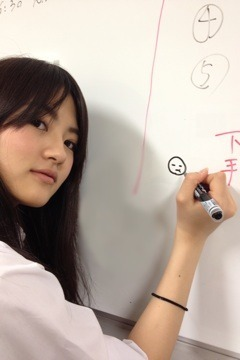

| 2012/05 10 Thu | 135回目*marika |
いつも読んでくださってる方、
初めて読んでくださった方、
コメントしてくださった方
ありがとうございます！
まりか

とぅりゃっっっ

どや顔
ツボすぎる
私、みゅうみゅう好きすぎる
そんで何を描いてるんだか。
昨日は雷なってました。

雷きょわい。
やんなっちゃう。
今週土曜日は個握だね

私服迷うー
早くにぎにぎしたい

みなさん会いたい
早くライブしたいな

全握も楽しみだなっ
..............
ところで細かいんだけど、
万理華ちゃんってホテルだと裸足なの？（笑
 写真では見えないと思いますが
写真では見えないと思いますが
片足スリッパ履いてるのよ^^笑
遠征の宿泊先でもマクラに顔を
うずめてクシャクシャ(^^)するの？
しっかりメイク取ってからね

しなきゃ落ち着かない。
127回の写真のTシャツどこの？
RNAです

ってか、マリカッシさぁ、フジテレビの
平井アナに似てるって言われない？
初めて言われた！

一番に推してもいい＞＜？
めっちゃ嬉しいです‼
ありがとうございますっ

顔のマッサージってどんなの？(ﾉﾟοﾟ)ﾉ
メイクさんによくやってもらうマッサージを
まねしてみたんです

リンパマッサージ的なやつです。
これからまりかちゃんだけにコメントしてもいい？
コメントしっかり読んでます

嬉しいです。よろしくお願いします♪
万理華ちゃんみたいに可愛くなる秘訣は？
ありがとうー><

いつもコメント
最初まりかちゃんかわよ
から始まってるのしってる？☆
わかるー

いつもコメントありがとうございます

まりかさん、最近大人っぽいですねー！
髪型のせいですか？なんのせいですか？
童顔だけど大人だもん

はははっ どや
いつも写真に絵描くときってペンとか使ってますか？
手で描いてます

..............
とまととわったっし
今日も元気に頑張りまりか:D
学校学校

まりか
コメント(111)
2012/05/10 07:30